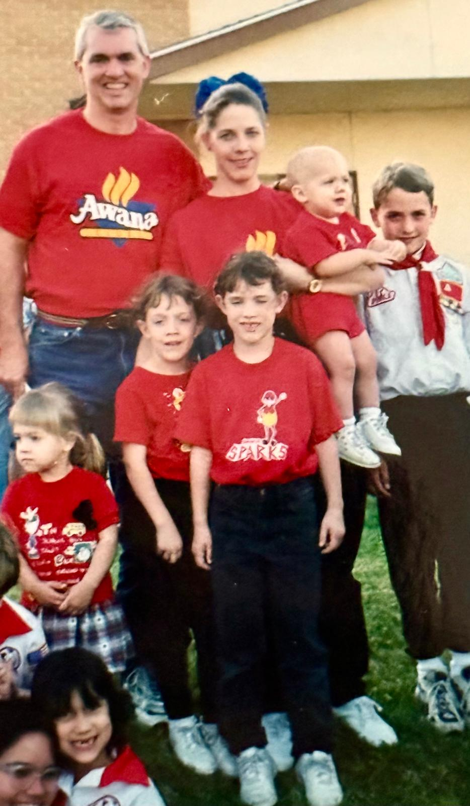

Message from Our Directors
Welcome to Stamford Awana! Our leadership team is committed to partnering with parents to help children know, love, and follow Jesus Christ every step of the way.
Awana Director
Karen Welborn
Director
"Our 7 children grew up going to Awana every week and it had such an impact on our family! The activities, games, handbooks, awards and events created lifelong memories while building a strong spiritual foundation. Our kids are now grown, but I continue serving in Awana so that other families can be blessed and also, because I am still learning so much about God through being in the Club."

The Welborn Family — 7 kids raised in Awana!
Our Club Directors
 Cubbies | Ages 3 – Pre-K
Cubbies | Ages 3 – Pre-K
Roccio La Torre
CUBBIES Club Director
Sparks | K – 2nd Grade
Jyothi Moody
SPARKS Director
T&T | 3rd – 6th Grade
Rufus Moody
T&T Boys Director
T&T | 3rd – 6th Grade
Christine Brookfield
T&T Girls Director
Trek | 7th – 9th Grade
Tutu Olomola
TREK Director